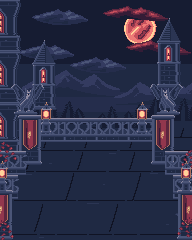
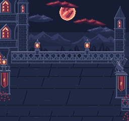
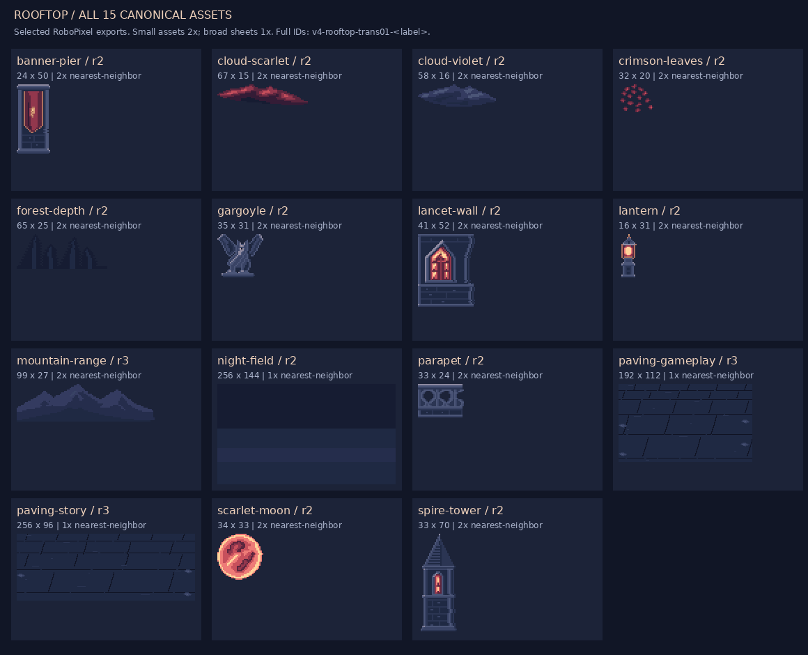
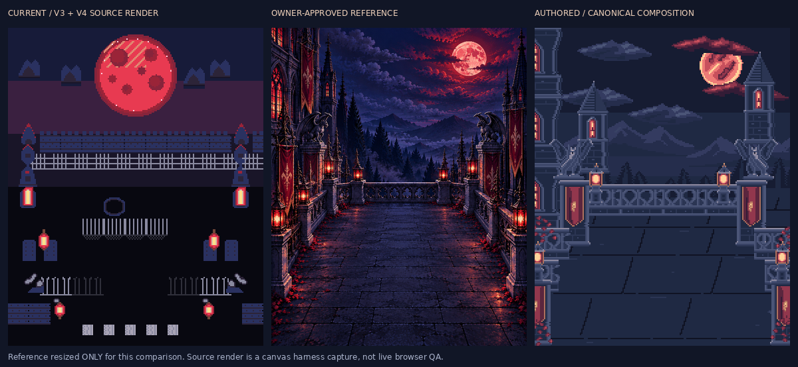
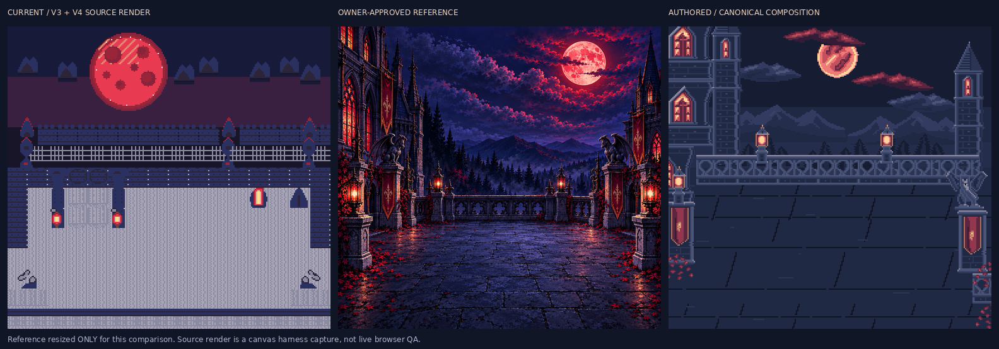
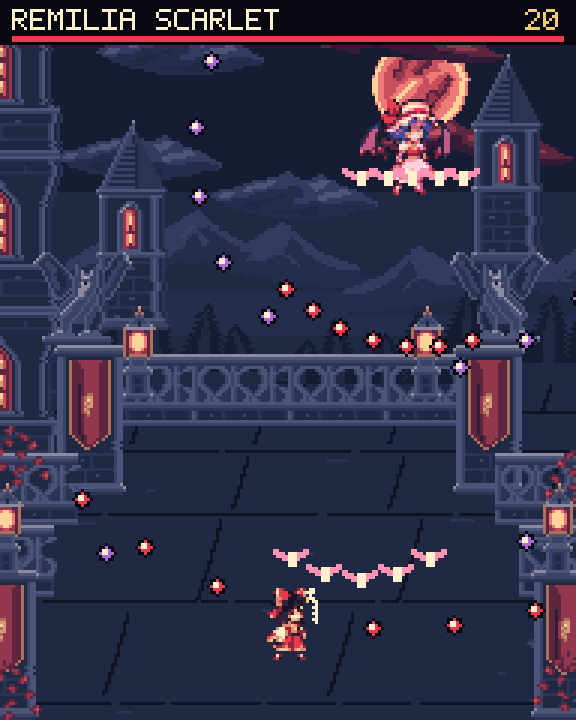
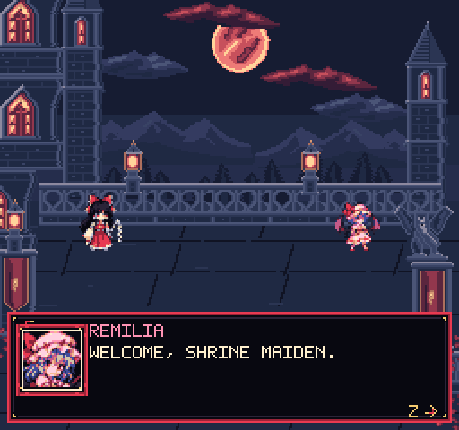

Static proof only. No runtime integration, formal approval or delivery. Existing session artwork and layouts preserved after interruption.
Reference images are art direction only. Native compositions use exact RoboPixel exports. Witnesses use existing game actors/UI/bullets in a source canvas harness, not live browser QA.







Limitations: quiet, sparse pavement; repeated parapet/cloud motifs; bright moon can compete with Remilia. Animation, all boss phases and runtime integration remain unqualified.